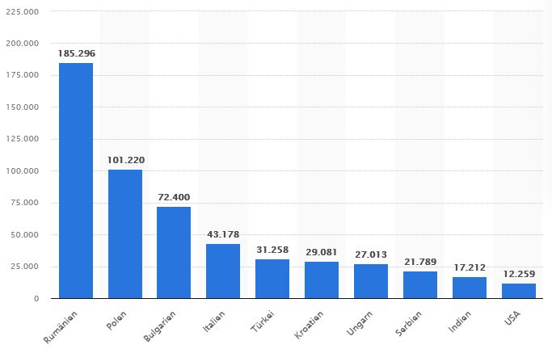
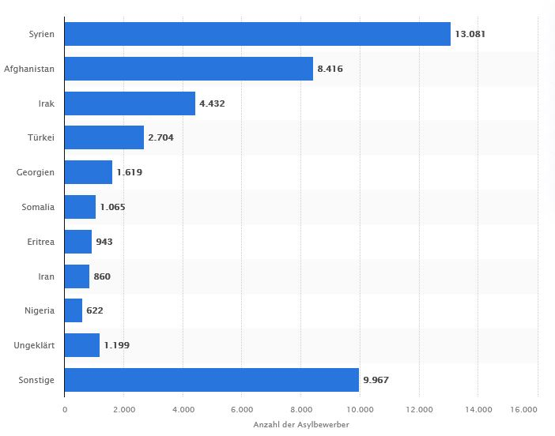

The Multiculutral Society in Germany, an English class project
Who are the main immigrant groups in Germany?
The diagram clearly shows that the majority of German immigrants come from Rumania. Poland and Bulgaria follow at a greater distance.
In 2022 people from Syria, Afghanistan and Iraq followed. The more than 500,000 refugees from Ukraine are not listed.
When did the imigrants come?
Due to the flight and expulsion of Germans from Central and Eastern Europe, around 6 million people, mostly Germans, came to what later became the Federal Republic of Germany in 1945-1950, making up around 15 percent of the total population of West Germany.
Another wave of migration began in the 1950s, 1960s and 1970s, when many millions of workers from Italy, Spain, Greece, Yugoslavia, Turkey, Portugal, Morocco, Tunisia and South Korea were employed as guest workers in the course of the "economic miracle". A recruitment freeze was imposed in 1973, and the most important immigration option was family reunification.
During the refugee crisis of 2015/16, 890,000 people came to Germany in 2015. They came mainly from Syria, Afghanistan and Iraq.
In March 2022, during the war between Russia and Ukraine, more than 500,000 Ukrainian refugees came to Germany.
Reasons why they came
In 2016, the reasons for residence were divided as follows: 43% humanitarian, international law or political reasons, 33% family reasons, 13% education, 7% employed specialists, 2% employment in unskilled employment, 2% other. Of course, the refugees from Ukraine came to Germany in 2022 because of the war.
What are their contributions to life in Germany?
According to a study, foreigners bring in billions for the German state. Accordingly, foreigners pay significantly more taxes and social security contributions than they cost the state - and the trend is rising.
An important growth for Germany are the trained specialists who come to Germany
New religions are arriving in Germany
Foreigners play a particularly important role in sport, especially in soccer
The German eating habits and the gastronomy landscape have changed in a special way in the past decades: In the meantime, foreign products and Dishes have become commonplace in wide circles
What help might they need to assimilate in Germany? What can you do?
Help with comprehension problems when filling out documents.
Helping find their way around the city.
Translate administrational documents.
Explain our medical and emergency systems (doctors, emergency numbers like 110 or 112)
Help to understand public transport (bus and train)